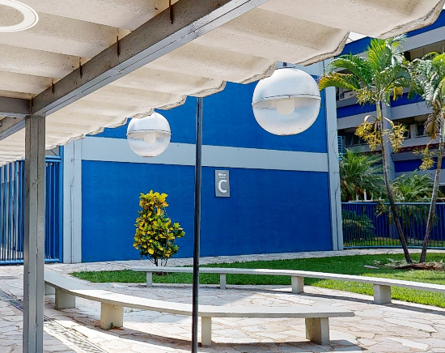

DESCRIÇÃO
O Bloco C da Universidade é um espaço central e multifuncional. Ele compõe restaurantes e lanchonetes, o ponto de suporte aos alunos (Atende) e a Sala de Matrículas. Além disso, o Bloco C é um dos locais onde ocorrem as aulas da universidade, tornando-o um ponto vital para a vida acadêmica e social dos estudantes.
SALAS E DEPARTAMENTOS
- TÉRREO: contém restaurantes e lanchonetes, o ponto de Atendimento ao Aluno (Atende) e a Sala de Matrículas.;
- 1º ANDAR: salas da 101 a 109, sanitários, também possui elevador.
- 2º ANDAR:Salas da 201 a 210, sanitários, também possui elevador.
HORÁRIO DE FUNCIONAMENTO
- De segunda a quinta-feira, das 8h às 21h, e sexta-feira, das 8h às 20h.